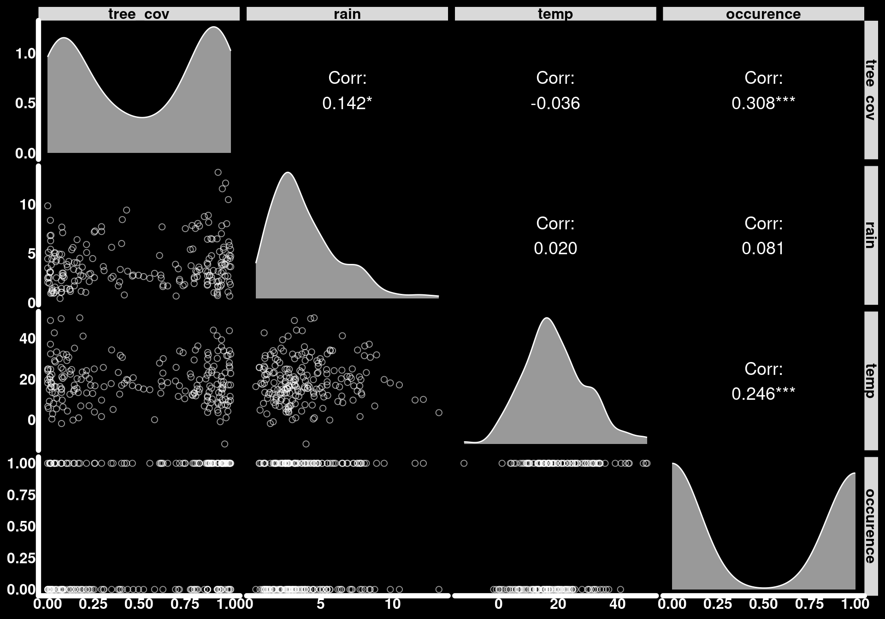
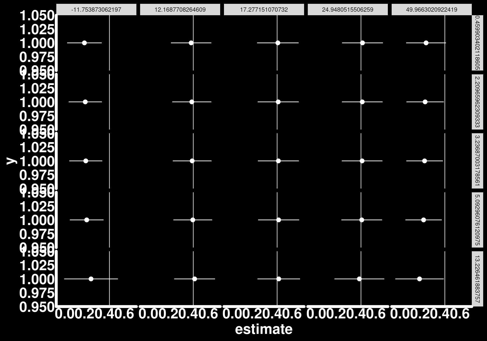

![]()
library(tidyverse) # Data manipulation and plotting
library(tidylog) # Print a log of data manipulations done with tidyverse
library(glmmTMB) # Generalized linear (mixed) models
library(marginaleffects) # Compute marginal/conditional effects
library(patchwork) # Combine multiple plots
library(distributional) # Simulate distributions
library(ggdist) # Plot nice distributions
library(GGally)
# Set ggplot2 theme
black_theme <- theme(
axis.line = element_line(linewidth = 2, lineend = "round", color = "white"),
panel.grid = element_blank(),
panel.background = element_rect(fill = "black", color = NA),
axis.ticks = element_blank(),
axis.text = element_text(size = 21, face = "bold", color = "white"),
axis.title = element_text(size = 21, face = "bold", color = "white"),
plot.title = element_text(size = 25, face = "bold", color = "white"),
plot.background = element_rect(fill = "black", color = NA),
legend.background = element_rect(fill = "black", color = NA),
legend.text = element_text(size = 21, color = "white"),
legend.title = element_text(size = 21, face = "bold", color = "white"),
legend.position = "bottom"
)
theme_set(black_theme)
# Set global default for geom_point shape
update_geom_defaults("point", list(shape = 1, size = 3, alpha = 0.8))
# silence marginaleffects warnings about glmmTMB
options(marginaleffects_safe = FALSE)
set.seed(333)Introduction
In this third part of my tutorial series on statistical interactions, we are going to push further on our understanding and reporting of interactions. Since we are going beyond the realm of linear models by exploring generalized linear models (GLMs) and their variants, I am assuming here that the reader has a basic understanding of how GLMs work especially concerning their use of link functions.
I typically write up these tutorials based on bits and pieces of information I have gathered here and there but I will (in part) address topics covered by Spake et al. (2023) https://onlinelibrary.wiley.com/doi/full/10.1111/brv.12939 while giving examples of tools that can be used to report interaction effects on the additive and multiplicative scale.
The case studies in this tutorial will focus on species occurence and abundance. We will first look at habitat suitability for a given species to occur in a given location. Second, we will explore factors that affect their abundance when they are present. Third, we will incorporate both these processes in a single model and learn how to extract as much information as possible from these types of analyses.
Setup
First, we load the relevant packages and set up our ggplot2 theme for the rest of the document.
Case Study 1: Species occurence
In this first case study, we are interested in species occurence in different habitats. Specifically, we want evaluate the the interacting effects of habitat composition and environmental variables on the probability of occurence in a given patch.
https://ben18785.shinyapps.io/distribution-zoo/
n_plots <- 200
tree_cover <- dist_mixture(dist_beta(4, 0.8), dist_beta(0.8, 4), weights = c(0.5, 0.5))
avg_yearly_rain <- dist_gamma(shape = 3, rate = 0.7)
avg_yearly_temp <- dist_normal(mu = 20, sd = 10)
occurence_intercept <- plogis(-3)
occurence_tree_effect <- 0.45
occurence_rain_effect <- 0.01
occurence_temp_effect <- 0.01
tibble(
tree = generate(tree_cover, n_plots),
rain = generate(avg_yearly_rain, n_plots),
temp = generate(avg_yearly_temp, n_plots)
) |>
unnest(everything()) |>
mutate(occurence = rbinom(n_plots, size = 1,
prob = occurence_intercept +
occurence_tree_effect * tree +
occurence_rain_effect * rain +
occurence_temp_effect * temp
))-> occ_datamutate: new variable 'occurence' (integer) with 2 unique values and 0% NAggpairs(
occ_data,
diag = list(continuous = wrap("densityDiag", fill = "white", alpha = 0.6, color = "white")),
lower = list(continuous = wrap("points", color = "white", alpha = 0.6, size = 2, shape = 1)),
upper = list(continuous = wrap("cor", color = "white", size = 5))
) +
theme(
strip.text = element_text(color = "black", face = "bold", size = 12),
axis.text = element_text(color = "white", face = "bold", size = 12)
)
Some people might want to dichotomize tree cover
occ_data |>
mutate(tree_cat = as.factor(ifelse(tree > 0.5, "high", "low"))) -> occ_datamutate: new variable 'tree_cat' (factor) with 2 unique values and 0% NAImplicit interactions
scale_x <- function(x){
( x - mean(x) ) / sd(x)
}
occ_data |>
mutate(scl_tree = scale_x(tree),
scl_rain = scale_x(rain),
scl_temp = scale_x(temp)) -> occ_datamutate: new variable 'scl_tree' (double) with 200 unique values and 0% NA
new variable 'scl_rain' (double) with 200 unique values and 0% NA
new variable 'scl_temp' (double) with 200 unique values and 0% NAmod_1 <- glmmTMB(occurence ~ tree + rain + temp, family = binomial(link = "logit"), data = occ_data)
summary(mod_1) Family: binomial ( logit )
Formula: occurence ~ tree + rain + temp
Data: occ_data
AIC BIC logLik -2*log(L) df.resid
250.0 263.2 -121.0 242.0 196
Conditional model:
Estimate Std. Error z value Pr(>|z|)
(Intercept) -2.27069 0.49227 -4.613 3.98e-06 ***
tree 1.87063 0.42528 4.399 1.09e-05 ***
rain 0.03176 0.06486 0.490 0.624346
temp 0.05805 0.01579 3.675 0.000238 ***
---
Signif. codes: 0 '***' 0.001 '**' 0.01 '*' 0.05 '.' 0.1 ' ' 1slopes(mod_1, variables = "tree", newdata = datagrid(temp = mean(occ_data$temp), rain = mean(occ_data$rain)))
temp rain Estimate Std. Error z Pr(>|z|) S 2.5 % 97.5 %
19 3.9 0.467 0.106 4.4 <0.001 16.5 0.259 0.675
Term: tree
Type: response
Comparison: dY/dXslopes(mod_1, variables = "tree")
Estimate Std. Error z Pr(>|z|) S 2.5 % 97.5 %
0.456 0.0926 4.92 <0.001 20.1 0.274 0.637
0.285 0.0764 3.74 <0.001 12.4 0.136 0.435
0.465 0.1017 4.58 <0.001 17.7 0.266 0.665
0.377 0.0673 5.60 <0.001 25.5 0.245 0.509
0.354 0.0746 4.75 <0.001 18.9 0.208 0.501
--- 190 rows omitted. See ?print.marginaleffects ---
0.466 0.1016 4.58 <0.001 17.7 0.267 0.665
0.467 0.1037 4.50 <0.001 17.2 0.264 0.670
0.336 0.0666 5.05 <0.001 21.1 0.206 0.467
0.464 0.1016 4.57 <0.001 17.6 0.265 0.663
0.301 0.0783 3.84 <0.001 13.0 0.147 0.454
Term: tree
Type: response
Comparison: dY/dXavg_slopes(mod_1, variables = "tree")
Estimate Std. Error z Pr(>|z|) S 2.5 % 97.5 %
0.391 0.0715 5.46 <0.001 24.3 0.25 0.531
Term: tree
Type: response
Comparison: dY/dXavg_slopes(mod_1, variables = "rain")
Estimate Std. Error z Pr(>|z|) S 2.5 % 97.5 %
0.00663 0.0135 0.491 0.624 0.7 -0.0199 0.0331
Term: rain
Type: response
Comparison: dY/dXavg_slopes(mod_1, variables = "temp")
Estimate Std. Error z Pr(>|z|) S 2.5 % 97.5 %
0.0121 0.00288 4.2 <0.001 15.2 0.00647 0.0178
Term: temp
Type: response
Comparison: dY/dXslopes(mod_1, variables = "tree", newdata = datagrid(temp = fivenum, rain = fivenum)) -> t
ggplot(t) + geom_pointrange(aes(x = estimate, xmin = conf.low, xmax = conf.high, y = 1), color = "white") +
geom_vline(xintercept = occurence_tree_effect, color = "white", alpha = .8) +
facet_grid(rain ~ temp)
predictions(mod_1, variables = "tree", newdata = datagrid(temp = fivenum, rain = fivenum)) -> pred_tree1
ggplot(pred_tree1) +
geom_ribbon(aes(x = tree, ymin = conf.low, ymax = conf.high), fill = "white", alpha = 0.2) +
geom_line(aes(x = tree, y = estimate), color = "white") +
facet_grid(rain ~ temp)
avg_slopes(mod_1, variables = "tree")
Estimate Std. Error z Pr(>|z|) S 2.5 % 97.5 %
0.391 0.0715 5.46 <0.001 24.3 0.25 0.531
Term: tree
Type: response
Comparison: dY/dXslopes(mod_1, variables = "tree", newdata = datagrid(temp = 0, rain = 0))
temp rain Estimate Std. Error z Pr(>|z|) S 2.5 % 97.5 %
0 0 0.312 0.0986 3.16 0.00156 9.3 0.119 0.505
Term: tree
Type: response
Comparison: dY/dXslopes(mod_1, variables = "tree", newdata = datagrid(temp = mean(occ_data$temp), rain = mean(occ_data$rain)))
temp rain Estimate Std. Error z Pr(>|z|) S 2.5 % 97.5 %
19 3.9 0.467 0.106 4.4 <0.001 16.5 0.259 0.675
Term: tree
Type: response
Comparison: dY/dXavg_slopes(mod_1, variables = "rain")
Estimate Std. Error z Pr(>|z|) S 2.5 % 97.5 %
0.00663 0.0135 0.491 0.624 0.7 -0.0199 0.0331
Term: rain
Type: response
Comparison: dY/dXslopes(mod_1, variables = "rain", newdata = datagrid(temp = 0, tree = 0))
temp tree Estimate Std. Error z Pr(>|z|) S 2.5 % 97.5 %
0 0 0.00298 0.00622 0.478 0.632 0.7 -0.00921 0.0152
Term: rain
Type: response
Comparison: dY/dXslopes(mod_1, variables = "rain", newdata = datagrid(temp = mean(occ_data$temp), tree = mean(occ_data$tree)))
temp tree Estimate Std. Error z Pr(>|z|) S 2.5 % 97.5 %
19 0.51 0.00792 0.0162 0.49 0.624 0.7 -0.0238 0.0396
Term: rain
Type: response
Comparison: dY/dXavg_slopes(mod_1, variables = "temp")
Estimate Std. Error z Pr(>|z|) S 2.5 % 97.5 %
0.0121 0.00288 4.2 <0.001 15.2 0.00647 0.0178
Term: temp
Type: response
Comparison: dY/dX